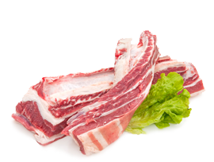

A pork chop is a flavorful and versatile cut of meat from the loin of a pig, typically bone-in and known for its tenderness when cooked properly. It can be grilled, pan-fried, or roasted, offering a juicy and succulent dining experience with a balance of savory flavors.
₹ 100.00/Kg
Quantity:
Organic Farm
Beef Fillet
4 customer reviews
Beef fillet, also known as tenderloin, is a prized and exceptionally tender cut of beef taken from the loin area of the animal. With its lean and buttery texture, it's often considered one of the most desirable cuts for its tenderness and mild flavor. Best cooked quickly over high heat to preserve its delicate texture, it's a favorite choice for steak lovers seeking a luxurious dining experience.
₹ 100.00/Kg
Quantity:
Organic Farm
Beef Steaks
4 customer reviews
Beef steaks are thick slices of beef cut from various primal cuts, such as ribeye, sirloin, or T-bone. Known for their rich flavor and juicy tenderness, steaks are typically grilled, pan-seared, or broiled to perfection, offering a delicious and satisfying dining experience. They come in a variety of cuts and thicknesses, catering to different preferences and cooking methods.
₹ 100.00/Kg
Quantity:

Organic Farm
Pork Bacon
4 customer reviews
Pork bacon is a popular cured meat made from pork belly or side cuts, known for its rich flavor and crispy texture when cooked. It's typically sliced thin and then either pan-fried, baked, or grilled until golden brown and crispy. Bacon adds a savory and smoky element to a wide range of dishes, from breakfast favorites like eggs and pancakes to sandwiches, salads, and pasta dishes.